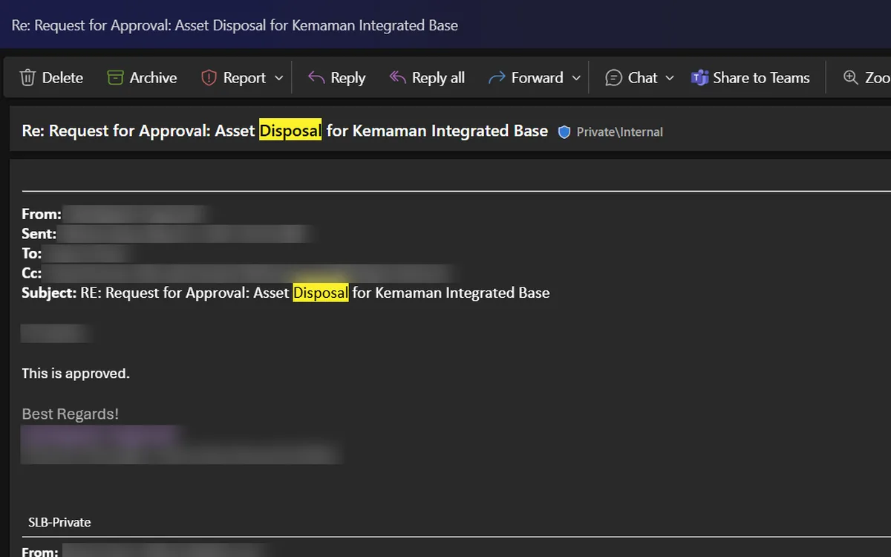
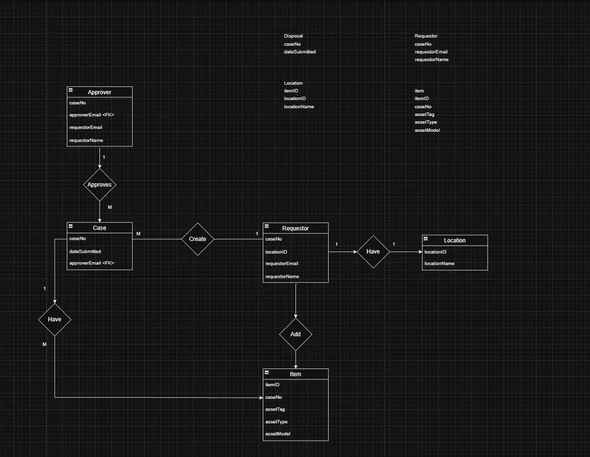
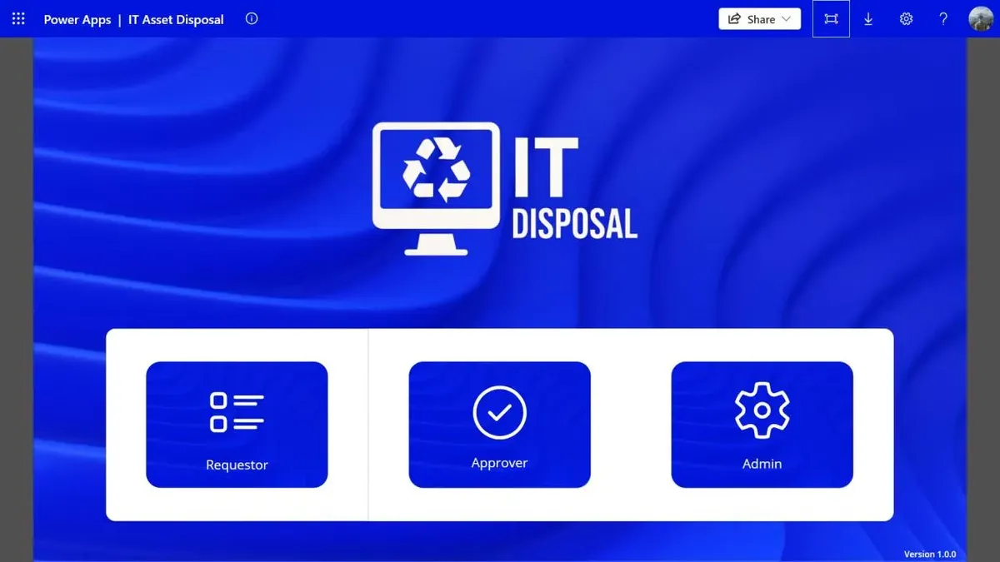
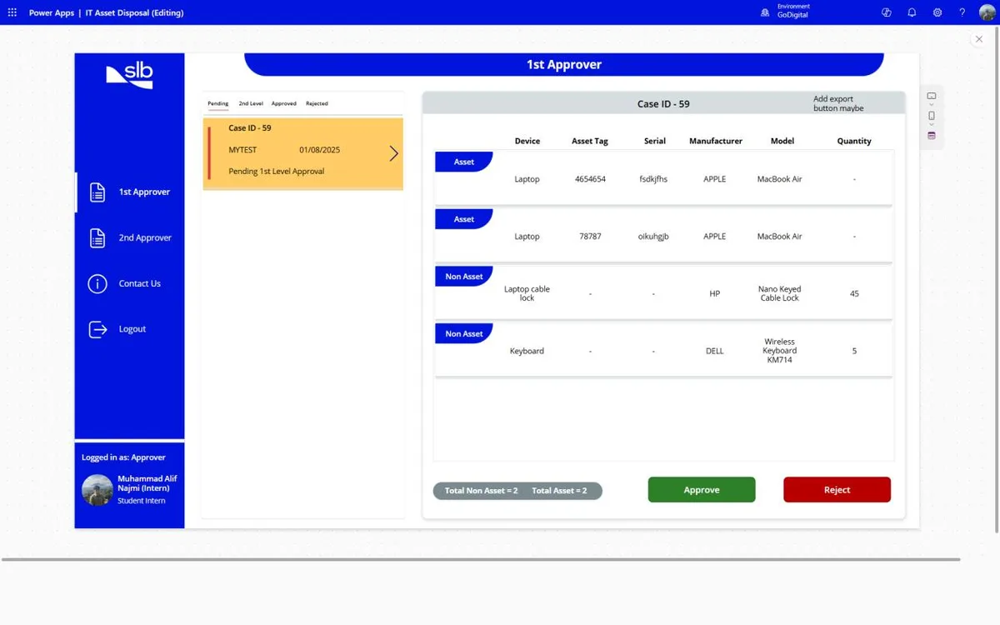
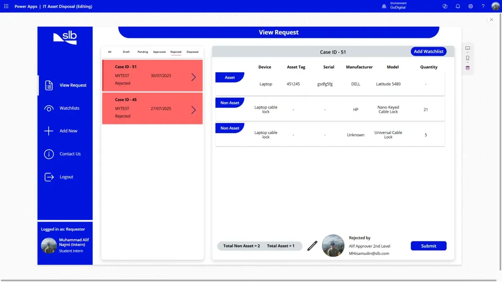

In January 2025 I started an eight-month internship in Digital IT Operations at SLB's base in Kemaman, Terengganu. Most days were what you'd expect: laptop setups, printers, Windows 11 upgrades, access points in a warehouse. But one process kept catching my eye, and it became the project I'm proudest of from my degree.
How e-waste used to leave the base
When IT equipment reached end of life, someone logged every laptop, monitor, cable lock and keyboard by hand in a spreadsheet, one tab per device type. The list was then emailed to the IT Manager for approval. Their reply was forwarded to the Finance Controller for a second approval, in the same thread. Only then could the risk report, the manpower requests and the actual disposal start.

It worked, but it didn't scale. The data lived in spreadsheets, inboxes and shared drives. If you wanted to know where a request stood, you scrolled through a reply-all chain. Nobody was told when something changed. And when an auditor asked for the record, it had to be stitched together from three places.

Starting on paper
Before touching Power Apps I mapped the existing process step by step, then sketched the screens on paper and talked them through with SLB's in-house GoDigital developers. That session gave the app its four roles: requestor, IT Manager, Finance Controller and admin. I also drew the data model and normalised it to third normal form, so each fact lives in one place.



What I built
The app runs on Power Apps, with SharePoint lists as the database and Power Automate sending the emails. A requestor picks their base, adds items, and saves a case. The approvers for that base fill in automatically, so nobody has to remember who signs off where.

From there a case moves through clear states: draft, waiting for the IT Manager, waiting for the Finance Controller, approved, disposed. Each approver sees only the cases waiting for them, with two buttons. If either one rejects it, the case turns red and goes back to the requestor to fix and resubmit.


A few smaller things made a big difference: dropdowns for item, brand and model so the data stays clean, a watchlist so colleagues can work on a case together, and a confirmation before anything that can't be undone.
What was hard
- Power Fx. It's formula-based, not a normal programming language, and most logic lives on button presses. The first two months were slow.
- Delegation limits. Power Apps can't always push a filter down to SharePoint, so it quietly looks at only the first few hundred rows. Cases could have gone missing as the lists grew. I loaded each case's data into local collections and filtered there instead.
- Showing everyone their own slice. Requestors, approvers and watchlist members all look at the same lists, so every screen filters by who's logged in.
Weekly check-ins with the GoDigital developers got me through most of it, and ChatGPT helped a lot with debugging expressions.
What I took away
- Understand the process before you build. The weeks I spent mapping the old flow mattered more than any formula.
- Low-code is still engineering. Data modelling, access rules and performance limits all still apply.
- Make state visible. Most of the pain in the old process was not knowing where things stood. Colour-coding cases by status fixed more than any feature.
Looking back, this is also where I worked out what I like doing: sitting between the people who use a process and the system that runs it. That's more or less my job now as a business analyst.

The prototype was handed over to the GoDigital team to refine and publish after I left. The source and a full write-up are on GitHub.
The flowcharts, ERDs and final data model behind it have their own note: Nine charts before one screen.
26 screens · about 2 minutesClick through the app yourselfFollow one disposal case from draft to disposed.